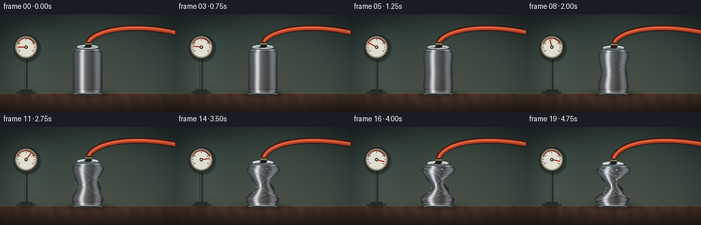
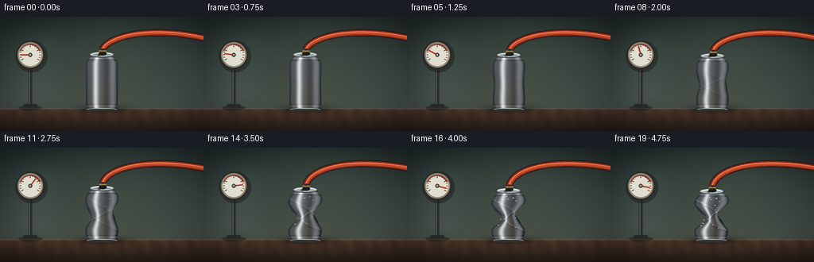
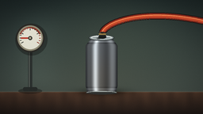
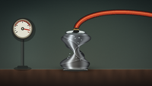
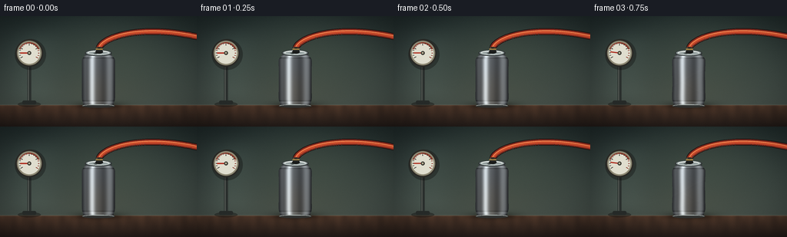
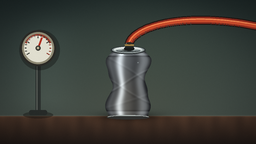

CODING AGENTS AS PIXEL WORLD MODELS
traex/DeepSeek-V4.1-Flash · phygen_019
点击播放 · 原生 RGB 像素
逐轮保存的候选
回放视频、检查图与代码变化。
每份候选均可单独播放。实际图片检查记录在下方工具轨迹中。
候选 01播放与检查图
点击播放 · 原生 RGB 像素

展开代码变化
--- 上一保存版本 +++ 本次保存版本 @@ -0,0 +1,432 @@ +from pathlib import Path +import math + +import cv2 +import numpy as np +from PIL import Image, ImageDraw, ImageFilter + +import artifact_io + + +W, H = 256, 144 +FRAMES = 20 +FPS = 4.0 +SS = 4 +OUT_W, OUT_H = W * SS, H * SS + + +def smoothstep(edge0, edge1, x): + t = np.clip((x - edge0) / (edge1 - edge0), 0.0, 1.0) + return t * t * (3.0 - 2.0 * t) + + +def smoothstep_scalar(edge0, edge1, x): + t = min(1.0, max(0.0, (x - edge0) / (edge1 - edge0))) + return t * t * (3.0 - 2.0 * t) + + +def gaussian1d(values, center, width): + return np.exp(-((values - center) / width) ** 2) + + +def make_background(rng): + y, x = np.mgrid[0:OUT_H, 0:OUT_W].astype(np.float32) + xf = x / OUT_W + yf = y / OUT_H + + # A muted sage studio wall and warm worktop keep the bare aluminium readable. + top = np.array([31, 42, 42], dtype=np.float32) + bottom = np.array([73, 82, 75], dtype=np.float32) + wall = top[None, None, :] * (1 - yf[..., None]) + bottom[None, None, :] * yf[..., None] + glow = np.exp(-(((xf - 0.57) / 0.36) ** 2 + ((yf - 0.34) / 0.38) ** 2)) + wall += glow[..., None] * np.array([16, 17, 12], dtype=np.float32) + + # Broad vertical softbox reflection. + softbox = np.exp(-((xf - 0.18) / 0.12) ** 2) * smoothstep(0.02, 0.30, yf) * (1 - smoothstep(0.66, 0.86, yf)) + wall += softbox[..., None] * np.array([9, 11, 10], dtype=np.float32) + + table_start = 116.0 + table_mask = yf >= table_start / H + table_y = np.clip((yf - table_start / H) / (1 - table_start / H), 0, 1) + wood_top = np.array([72, 51, 39], dtype=np.float32) + wood_bottom = np.array([34, 27, 24], dtype=np.float32) + wood = wood_top[None, None, :] * (1 - table_y[..., None]) + wood_bottom[None, None, :] * table_y[..., None] + grain = ( + 0.55 * np.sin(xf * 72 + 0.8 * np.sin(yf * 18)) + + 0.25 * np.sin(xf * 131 + yf * 9) + + 0.20 * np.sin(xf * 39 - yf * 16) + ) + grain *= 2.0 * (1 - table_y) + wood += grain[..., None] * np.array([4.2, 2.8, 1.8], dtype=np.float32) + wall[table_mask] = wood[table_mask] + + # Table edge and a soft contact shadow beneath the can. + edge = np.exp(-((yf - table_start / H) / 0.006) ** 2) + wall += edge[..., None] * np.array([19, 16, 13], dtype=np.float32) + shadow = np.exp(-(((xf - 0.505) / 0.115) ** 2 + ((yf - 0.806) / 0.035) ** 2)) + contact = np.exp(-(((xf - 0.505) / 0.080) ** 2 + ((yf - 0.812) / 0.014) ** 2)) + wall *= (1 - 0.42 * shadow[..., None] - 0.30 * contact[..., None]) + + # Small reflected warm light from the worktop on the lower wall. + warm_bounce = np.exp(-(((xf - 0.52) / 0.25) ** 2 + ((yf - 0.70) / 0.16) ** 2)) + wall += warm_bounce[..., None] * np.array([5, 3, 1], dtype=np.float32) + + # Gentle vignette and very fine sensor grain. + radius = np.sqrt(((xf - 0.5) / 0.68) ** 2 + ((yf - 0.50) / 0.72) ** 2) + vignette = 1.0 - 0.20 * smoothstep(0.48, 1.12, radius) + wall *= vignette[..., None] + wall += rng.normal(0.0, 1.0, (OUT_H, OUT_W, 1)).astype(np.float32) * 1.1 + return np.clip(wall, 0, 255) + + +def body_geometry(t): + dent = 0.14 * smoothstep(0.04, 0.48, t) + 0.86 * smoothstep(0.20, 1.0, t) ** 1.28 + top = 47.0 + 7.2 * dent + bottom = 117.0 + center = 128.0 + 0.9 * dent * math.sin(t * 4.2) + return dent, top, bottom, center + + +def can_surface(t, dent, top, bottom, center): + y, x = np.mgrid[0:OUT_H, 0:OUT_W].astype(np.float32) + xf = x / SS + yf = y / SS + yn = np.clip((yf - top) / (bottom - top), 0, 1) + + shoulder = 0.70 + 0.30 * smoothstep(0.015, 0.17, yn) + taper = 1.0 - 0.10 * smoothstep(0.86, 1.0, yn) + base_half = 20.2 * shoulder * taper + + upper_bulge = 0.16 * dent * gaussian1d(yn, 0.28, 0.105) + lower_bulge = 0.14 * dent * gaussian1d(yn, 0.76, 0.105) + base_half *= 1.0 + upper_bulge + lower_bulge + + left_dent = dent * (0.62 * gaussian1d(yn, 0.56, 0.165) + 0.10 * gaussian1d(yn, 0.35, 0.075)) + right_dent = dent * (0.65 * gaussian1d(yn, 0.49, 0.175) + 0.09 * gaussian1d(yn, 0.69, 0.075)) + half_left = base_half * (1.0 - np.clip(left_dent, 0, 0.67)) + half_right = base_half * (1.0 - np.clip(right_dent, 0, 0.67)) + + ripple = 1.35 * dent * np.sin(yn * math.pi * 6.0 + 0.4) * gaussian1d(yn, 0.52, 0.24) + half_left += ripple + half_right -= ripple * 0.75 + row_shift = 1.1 * dent * np.sin(yn * math.pi * 4.0 + 0.3) + cx = center + row_shift + + mask = ( + (yf >= top) + & (yf <= bottom) + & (xf >= cx - half_left) + & (xf <= cx + half_right) + ) + u = (xf - cx) / np.maximum(half_left + half_right, 1.0) * 2.0 + u = np.clip(u, -1.0, 1.0) + + # Cylindrical aluminium shading with a hot softbox reflection and cool rim. + lit = 0.29 + lit += 0.70 * np.exp(-((u + 0.39) / 0.18) ** 2) + lit += 0.16 * np.exp(-((u - 0.63) / 0.20) ** 2) + lit += 0.055 * np.cos(u * math.pi * 2.4 + 0.5) + lit -= 0.18 * smoothstep(0.78, 1.0, np.abs(u)) + lit += 0.05 * (1.0 - yn) + + # Thin embossed rings and long vertical brushing. + ring_top = np.exp(-((yn - 0.075) / 0.020) ** 2) + ring_bottom = np.exp(-((yn - 0.935) / 0.022) ** 2) + lit += 0.16 * ring_top + 0.10 * ring_bottom + lit -= 0.11 * np.exp(-((yn - 0.105) / 0.010) ** 2) + lit -= 0.08 * np.exp(-((yn - 0.905) / 0.011) ** 2) + brushed = 0.018 * np.sin(xf * 8.7 + np.sin(yf * 0.21) * 2.0) + lit += brushed + + # Buckling catches the studio light as a set of broken diagonal creases. + for fold_y, tilt, strength in ((0.34, 0.16, 0.09), (0.50, -0.12, 0.16), (0.66, 0.14, 0.11)): + centerline = fold_y + tilt * u + crease = np.exp(-((yn - centerline) / 0.017) ** 2) + shade = np.exp(-((yn - centerline - 0.026) / 0.020) ** 2) + lit += dent * strength * crease + lit -= dent * strength * 0.72 * shade + + lit = np.clip(lit, 0.10, 1.16) + rgb = np.empty((OUT_H, OUT_W, 3), dtype=np.float32) + rgb[..., 0] = lit * 205 + 9 + rgb[..., 1] = lit * 213 + 10 + rgb[..., 2] = lit * 217 + 12 + rgb[..., 0] += 8 * smoothstep(0.15, 0.75, yn) * (1 - np.abs(u)) + rgb[..., 1] += 3 * smoothstep(0.15, 0.75, yn) * (1 - np.abs(u)) + rgb[..., 2] -= 4 * smoothstep(0.15, 0.75, yn) * (1 - np.abs(u)) + return mask, np.clip(rgb, 0, 255) + + +def draw_shadow_ellipse(draw, center, radius, color): + cx, cy = center + rx, ry = radius + draw.ellipse((cx - rx, cy - ry, cx + rx, cy + ry), fill=color) + + +def bezier(points, count=160): + p0, p1, p2, p3 = [np.array(p, dtype=np.float32) for p in points] + out = [] + for i in range(count): + s = i / (count - 1) + q = ( + (1 - s) ** 3 * p0 + + 3 * (1 - s) ** 2 * s * p1 + + 3 * (1 - s) * s**2 * p2 + + s**3 * p3 + ) + out.append(q) + return np.asarray(out) + + +def draw_hose(draw, start, t): + # Slightly different sag and tension as vacuum builds. + path = bezier( + [ + start, + (start[0] + 6, 26 - 1.5 * t), + (187, 10 + 2.0 * t), + (262, 28 - 2.0 * t), + ] + ) * SS + pts = [tuple(p) for p in path] + draw.line(pts, fill=(31, 20, 18), width=9 * SS, joint="curve") + draw.line(pts, fill=(137, 43, 30), width=7 * SS, joint="curve") + draw.line(pts, fill=(201, 75, 44), width=4 * SS, joint="curve") + draw.line([(p[0], p[1] - 1.1 * SS) for p in path], fill=(244, 143, 86), width=max(1, SS), joint="curve") + + # Raised reinforcing ribs read as a believable vacuum hose. + for index in range(13, len(path) - 4, 11): + p = path[index] + tangent = path[min(index + 2, len(path) - 1)] - path[max(index - 2, 0)] + tangent /= max(1e-5, float(np.linalg.norm(tangent))) + normal = np.array([-tangent[1], tangent[0]], dtype=np.float32) + a = (p - normal * 3.2) * SS + b = (p + normal * 3.2) * SS + draw.line([tuple(a), tuple(b)], fill=(79, 30, 25), width=max(1, SS)) + + # Translucent moving extraction pulses inside the line. + for k in range(4): + s = (0.12 + 0.22 * k + 0.055 * t) % 0.86 + index = int(s * (len(path) - 1)) + p = path[index] * SS + alpha = 1.0 - 0.45 * t + col = tuple(int(v * alpha) for v in (205, 240, 232)) + r = (1.2 + 0.2 * math.sin(k + t * 6)) * SS + draw.ellipse((p[0] - r, p[1] - r, p[0] + r, p[1] + r), fill=col) + + +def draw_gauge(image, t): + draw = ImageDraw.Draw(image, "RGBA") + cx, cy, r = 38.0 * SS, 48.0 * SS, 18.0 * SS + + # Stand and soft shadow. + draw_shadow_ellipse(draw, (38 * SS, 115 * SS), (15 * SS, 3.4 * SS), (18, 17, 15, 105)) + draw.rounded_rectangle( + (35.4 * SS, 64 * SS, 40.6 * SS, 113 * SS), + radius=1.8 * SS, + fill=(43, 48, 46, 255), + ) + draw.line((36.8 * SS, 65 * SS, 36.8 * SS, 112 * SS), fill=(120, 125, 117, 170), width=SS) + draw.rounded_rectangle( + (29.0 * SS, 110.0 * SS, 47.0 * SS, 115.0 * SS), + radius=2.0 * SS, + fill=(38, 42, 40, 255), + ) + + draw_shadow_ellipse(draw, (cx + 1.6 * SS, cy + 2.0 * SS), (r * 1.12, r * 1.12), (14, 14, 13, 95)) + draw.ellipse((cx - r, cy - r, cx + r, cy + r), fill=(43, 42, 38, 255)) + draw.ellipse( + (cx - r + 2 * SS, cy - r + 2 * SS, cx + r - 2 * SS, cy + r - 2 * SS), + fill=(142, 137, 116, 255), + ) + face_r = r - 4.0 * SS + draw.ellipse((cx - face_r, cy - face_r, cx + face_r, cy + face_r), fill=(224, 222, 207, 255)) + draw.arc( + (cx - face_r, cy - face_r, cx + face_r, cy + face_r), + 202, + 338, + fill=(145, 58, 43, 255), + width=2 * SS, + ) + + # Dial ticks and a live needle. + for i in range(17): + frac = i / 16.0 + angle = math.radians(150 + 240 * frac) + r0 = face_r - (4.0 if i % 4 == 0 else 2.4) * SS + r1 = face_r - 0.8 * SS + a = (cx + math.cos(angle) * r0, cy + math.sin(angle) * r0) + b = (cx + math.cos(angle) * r1, cy + math.sin(angle) * r1) + color = (137, 54, 40, 255) if frac > 0.76 else (56, 58, 52, 255) + draw.line([a, b], fill=color, width=max(1, SS)) + + pressure = 0.12 + 0.83 * smoothstep_scalar(0.05, 0.93, t) + if t > 0.82: + pressure += 0.025 * math.sin((t - 0.82) * 25) + pressure = min(0.98, pressure) + angle = math.radians(150 + 240 * pressure) + tip = (cx + math.cos(angle) * (face_r - 2.4 * SS), cy + math.sin(angle) * (face_r - 2.4 * SS)) + draw.line((cx, cy, tip[0], tip[1]), fill=(176, 50, 35, 255), width=round(1.8 * SS)) + draw.ellipse((cx - 2.5 * SS, cy - 2.5 * SS, cx + 2.5 * SS, cy + 2.5 * SS), fill=(61, 60, 53, 255)) + draw.ellipse((cx - 1.1 * SS, cy - 1.1 * SS, cx + 1.1 * SS, cy + 1.1 * SS), fill=(190, 181, 151, 255)) + draw.arc( + (cx - face_r + 1.5 * SS, cy - face_r + 1.5 * SS, cx + face_r - 4 * SS, cy + face_r - 4 * SS), + 205, + 300, + fill=(255, 255, 245, 105), + width=round(1.3 * SS), + ) + + +def draw_can_top(draw, center, top, t, dent): + cx = center + # Dark shoulder lip, then the closed concave lid. + draw.ellipse( + ((cx - 16.2) * SS, (top - 2.6) * SS, (cx + 16.2) * SS, (top + 4.3) * SS), + fill=(44, 49, 50, 255), + ) + draw.ellipse( + ((cx - 15.1) * SS, (top - 2.3) * SS, (cx + 15.1) * SS, (top + 3.6) * SS), + fill=(139, 149, 149, 255), + ) + draw.ellipse( + ((cx - 13.5) * SS, (top - 1.6) * SS, (cx + 13.5) * SS, (top + 2.8) * SS), + fill=(195, 204, 201, 255), + ) + draw.ellipse( + ((cx - 11.7) * SS, (top - 0.8 + 1.4 * dent) * SS, (cx + 11.7) * SS, (top + 2.2) * SS), + fill=(147, 158, 158, 255), + ) + draw.arc( + ((cx - 13.2) * SS, (top - 1.8) * SS, (cx + 13.2) * SS, (top + 3.1) * SS), + 192, + 340, + fill=(245, 249, 244, 255), + width=SS, + ) + + # Pull tab, folded flat against the lid. + tab_shift = -1.6 * SS + draw.ellipse( + ((cx - 4.7) * SS + tab_shift, (top + 0.1) * SS, (cx + 1.0) * SS + tab_shift, (top + 2.6) * SS), + outline=(100, 108, 107, 255), + width=SS, + ) + draw.ellipse( + ((cx - 3.3) * SS + tab_shift, (top + 0.65) * SS, (cx + 0.2) * SS + tab_shift, (top + 2.0) * SS), + fill=(61, 68, 68, 255), + ) + + # Black vacuum fitting with a brass collar and small white clamp tab. + fx = cx + 1.1 + draw.ellipse( + ((fx - 5.1) * SS, (top - 2.7) * SS, (fx + 5.1) * SS, (top + 1.8) * SS), + fill=(25, 27, 26, 255), + ) + draw.rounded_rectangle( + ((fx - 4.3) * SS, (top - 6.2) * SS, (fx + 4.3) * SS, (top - 1.5) * SS), + radius=1.6 * SS, + fill=(37, 39, 37, 255), + ) + draw.rectangle( + ((fx - 4.5) * SS, (top - 4.7) * SS, (fx + 4.5) * SS, (top - 3.1) * SS), + fill=(159, 130, 71, 255), + ) + draw.line( + ((fx - 3.4) * SS, (top - 5.7) * SS, (fx + 2.6) * SS, (top - 5.7) * SS), + fill=(113, 119, 114, 255), + width=SS, + ) + draw.ellipse( + ((fx - 2.8) * SS, (top - 6.9) * SS, (fx + 2.8) * SS, (top - 4.7) * SS), + fill=(49, 43, 38, 255), + ) + + +def draw_bottom_rim(draw, center, bottom, dent): + cx = center + draw.ellipse( + ((cx - 19.8) * SS, (bottom - 2.0) * SS, (cx + 19.8) * SS, (bottom + 2.4) * SS), + fill=(48, 49, 47, 255), + ) + draw.arc( + ((cx - 19.0) * SS, (bottom - 1.8) * SS, (cx + 19.0) * SS, (bottom + 1.9) * SS), + 185, + 355, + fill=(187, 196, 192, 255), + width=SS, + ) + draw.line( + ((cx - 17.0) * SS, (bottom - 1.1) * SS, (cx + 17.0) * SS, (bottom - 1.1) * SS), + fill=(116, 122, 120, 255), + width=max(1, SS // 2), + ) + + +def add_condensation(image, center, top, t): + if t < 0.42: + return + draw = ImageDraw.Draw(image, "RGBA") + amount = smoothstep_scalar(0.42, 1.0, t) + rng = np.random.default_rng(117) + for _ in range(int(18 * amount)): + x = center + rng.uniform(-13, 13) + y = top + rng.uniform(7, 49) + r = rng.uniform(0.35, 0.95) + alpha = int(70 + 90 * amount) + draw.ellipse( + ((x - r) * SS, (y - r * 0.65) * SS, (x + r) * SS, (y + r * 0.65) * SS), + fill=(218, 239, 236, alpha), + ) + + +def add_finish(image, rng, t): + arr = np.asarray(image, dtype=np.float32) + y, x = np.mgrid[0:OUT_H, 0:OUT_W].astype(np.float32) + xf = x / OUT_W + yf = y / OUT_H + radius = np.sqrt(((xf - 0.5) / 0.70) ** 2 + ((yf - 0.5) / 0.74) ** 2) + vignette = 1.0 - 0.10 * smoothstep(0.58, 1.10, radius) + arr *= vignette[..., None] + arr += rng.normal(0.0, 0.75, (OUT_H, OUT_W, 1)).astype(np.float32) + return Image.fromarray(np.clip(arr, 0, 255).astype(np.uint8), "RGB") + + +def render_frame(index, background, rng): + t = index / (FRAMES - 1) + dent, top, bottom, center = body_geometry(t) + canvas = background.copy() + mask, body = can_surface(t, dent, top, bottom, center) + canvas[mask] = body[mask] + + image = Image.fromarray(np.clip(canvas, 0, 255).astype(np.uint8), "RGB") + draw_gauge(image, t) + draw_hose(ImageDraw.Draw(image), (center + 1.1, top - 5.7), t) + draw_bottom_rim(ImageDraw.Draw(image), center, bottom, dent) + draw_can_top(ImageDraw.Draw(image), center, top, t, dent) + add_condensation(image, center, top, t) + image = add_finish(image, rng, t) + return np.asarray(image.resize((W, H), Image.Resampling.LANCZOS), dtype=np.uint8) + + +def main(): + case_dir = Path(__file__).resolve().parent + rng = np.random.default_rng(20261110) + background = make_background(rng) + frames = [render_frame(i, background, rng) for i in range(FRAMES)] + artifact_io.save(frames, case_dir) + + writer = cv2.VideoWriter( + str(case_dir / "preview.mp4"), + cv2.VideoWriter_fourcc(*"mp4v"), + FPS, + (W, H), + ) + if writer.isOpened(): + for frame in frames: + writer.write(cv2.cvtColor(frame, cv2.COLOR_RGB2BGR)) + writer.release() + + +if __name__ == "__main__": + main()
候选 02播放与检查图
点击播放 · 原生 RGB 像素

展开代码变化
--- 上一保存版本
+++ 本次保存版本
@@ -80,8 +80,8 @@
def body_geometry(t):
- dent = 0.14 * smoothstep(0.04, 0.48, t) + 0.86 * smoothstep(0.20, 1.0, t) ** 1.28
- top = 47.0 + 7.2 * dent
+ dent = 0.08 * smoothstep(0.04, 0.38, t) + 0.92 * smoothstep(0.19, 1.0, t) ** 1.35
+ top = 47.0 + 6.3 * dent
bottom = 117.0
center = 128.0 + 0.9 * dent * math.sin(t * 4.2)
return dent, top, bottom, center
@@ -93,23 +93,23 @@
yf = y / SS
yn = np.clip((yf - top) / (bottom - top), 0, 1)
- shoulder = 0.70 + 0.30 * smoothstep(0.015, 0.17, yn)
+ shoulder = 0.76 + 0.24 * smoothstep(0.015, 0.15, yn)
taper = 1.0 - 0.10 * smoothstep(0.86, 1.0, yn)
- base_half = 20.2 * shoulder * taper
-
- upper_bulge = 0.16 * dent * gaussian1d(yn, 0.28, 0.105)
- lower_bulge = 0.14 * dent * gaussian1d(yn, 0.76, 0.105)
+ base_half = 21.5 * shoulder * taper
+
+ upper_bulge = 0.25 * dent * gaussian1d(yn, 0.20, 0.105)
+ lower_bulge = 0.22 * dent * gaussian1d(yn, 0.82, 0.105)
base_half *= 1.0 + upper_bulge + lower_bulge
- left_dent = dent * (0.62 * gaussian1d(yn, 0.56, 0.165) + 0.10 * gaussian1d(yn, 0.35, 0.075))
- right_dent = dent * (0.65 * gaussian1d(yn, 0.49, 0.175) + 0.09 * gaussian1d(yn, 0.69, 0.075))
- half_left = base_half * (1.0 - np.clip(left_dent, 0, 0.67))
- half_right = base_half * (1.0 - np.clip(right_dent, 0, 0.67))
-
- ripple = 1.35 * dent * np.sin(yn * math.pi * 6.0 + 0.4) * gaussian1d(yn, 0.52, 0.24)
+ left_dent = dent * (0.71 * gaussian1d(yn, 0.53, 0.175) + 0.13 * gaussian1d(yn, 0.30, 0.085))
+ right_dent = dent * (0.67 * gaussian1d(yn, 0.47, 0.185) + 0.13 * gaussian1d(yn, 0.70, 0.085))
+ half_left = base_half * (1.0 - np.clip(left_dent, 0, 0.73))
+ half_right = base_half * (1.0 - np.clip(right_dent, 0, 0.70))
+
+ ripple = 2.3 * dent * np.sin(yn * math.pi * 6.0 + 0.4) * gaussian1d(yn, 0.52, 0.24)
half_left += ripple
half_right -= ripple * 0.75
- row_shift = 1.1 * dent * np.sin(yn * math.pi * 4.0 + 0.3)
+ row_shift = 1.5 * dent * np.sin(yn * math.pi * 4.0 + 0.3)
cx = center + row_shift
mask = (
@@ -139,7 +139,7 @@
lit += brushed
# Buckling catches the studio light as a set of broken diagonal creases.
- for fold_y, tilt, strength in ((0.34, 0.16, 0.09), (0.50, -0.12, 0.16), (0.66, 0.14, 0.11)):
+ for fold_y, tilt, strength in ((0.28, 0.18, 0.13), (0.46, -0.16, 0.23), (0.62, 0.17, 0.16), (0.76, -0.10, 0.10)):
centerline = fold_y + tilt * u
crease = np.exp(-((yn - centerline) / 0.017) ** 2)
shade = np.exp(-((yn - centerline - 0.026) / 0.020) ** 2)
@@ -282,29 +282,40 @@
cx = center
# Dark shoulder lip, then the closed concave lid.
draw.ellipse(
- ((cx - 16.2) * SS, (top - 2.6) * SS, (cx + 16.2) * SS, (top + 4.3) * SS),
+ ((cx - 17.5) * SS, (top - 2.8) * SS, (cx + 17.5) * SS, (top + 5.1) * SS),
fill=(44, 49, 50, 255),
)
draw.ellipse(
- ((cx - 15.1) * SS, (top - 2.3) * SS, (cx + 15.1) * SS, (top + 3.6) * SS),
+ ((cx - 16.2) * SS, (top - 2.4) * SS, (cx + 16.2) * SS, (top + 4.2) * SS),
fill=(139, 149, 149, 255),
)
draw.ellipse(
- ((cx - 13.5) * SS, (top - 1.6) * SS, (cx + 13.5) * SS, (top + 2.8) * SS),
+ ((cx - 14.5) * SS, (top - 1.6) * SS, (cx + 14.5) * SS, (top + 3.3) * SS),
fill=(195, 204, 201, 255),
)
draw.ellipse(
- ((cx - 11.7) * SS, (top - 0.8 + 1.4 * dent) * SS, (cx + 11.7) * SS, (top + 2.2) * SS),
+ ((cx - 12.7) * SS, (top - 0.6 + 2.8 * dent) * SS, (cx + 12.7) * SS, (top + 2.4) * SS),
fill=(147, 158, 158, 255),
)
draw.arc(
- ((cx - 13.2) * SS, (top - 1.8) * SS, (cx + 13.2) * SS, (top + 3.1) * SS),
+ ((cx - 14.1) * SS, (top - 1.8) * SS, (cx + 14.1) * SS, (top + 3.7) * SS),
192,
340,
fill=(245, 249, 244, 255),
width=SS,
)
+ # A dark crescent under the rim shows the lid bending down under pressure.
+ if dent > 0.12:
+ lid_alpha = int(115 * dent)
+ draw.arc(
+ ((cx - 12.4) * SS, (top - 0.8 + 2.2 * dent) * SS, (cx + 12.4) * SS, (top + 3.2) * SS),
+ 15,
+ 165,
+ fill=(65, 73, 74, lid_alpha),
+ width=round(1.2 * SS),
+ )
+
# Pull tab, folded flat against the lid.
tab_shift = -1.6 * SS
draw.ellipse(
@@ -346,18 +357,18 @@
def draw_bottom_rim(draw, center, bottom, dent):
cx = center
draw.ellipse(
- ((cx - 19.8) * SS, (bottom - 2.0) * SS, (cx + 19.8) * SS, (bottom + 2.4) * SS),
+ ((cx - 21.5) * SS, (bottom - 2.0) * SS, (cx + 21.5) * SS, (bottom + 2.4) * SS),
fill=(48, 49, 47, 255),
)
draw.arc(
- ((cx - 19.0) * SS, (bottom - 1.8) * SS, (cx + 19.0) * SS, (bottom + 1.9) * SS),
+ ((cx - 20.7) * SS, (bottom - 1.8) * SS, (cx + 20.7) * SS, (bottom + 1.9) * SS),
185,
355,
fill=(187, 196, 192, 255),
width=SS,
)
draw.line(
- ((cx - 17.0) * SS, (bottom - 1.1) * SS, (cx + 17.0) * SS, (bottom - 1.1) * SS),
+ ((cx - 18.5) * SS, (bottom - 1.1) * SS, (cx + 18.5) * SS, (bottom - 1.1) * SS),
fill=(116, 122, 120, 255),
width=max(1, SS // 2),
)
可观测工具轨迹
实际执行的命令与返回图片。
命令 1exit 0
/bin/bash -c "pwd && rg --files -g '"'!*node_modules*'"' -g '"'!*.mp4'"' | sed -n '1,120p'"
命令 2exit 0
/bin/bash -c "sed -n '1,240p' prompt.txt"
命令 3exit 0
/bin/bash -c "sed -n '1,260p' GENERATION_RULES.md"
命令 4exit 0
/bin/bash -c 'cat task_spec.json'
命令 5exit 0
/bin/bash -c "find . -maxdepth 2 -type f -printf '%p %s bytes\\n' | sort | sed -n '1,160p'"
命令 6exit 0
/bin/bash -c "sed -n '1,260p' artifact_io.py"
命令 7exit 0
/bin/bash -c "sed -n '1,260p' player_template.html"
命令 8exit 0
/bin/bash -c "python - <<'PY' import importlib.util for m in ['numpy','PIL','cv2','imageio','matplotlib','scipy']: print(m, bool(importlib.util.find_spec(m))) PY ffmpeg -version | head -n 2"
命令 9exit 1
/bin/bash -c 'python generate.py'
命令 10exit 0
/bin/bash -c "rg -n 'width=' generate.py"
命令 11exit 0
/bin/bash -c 'python generate.py'
命令 12exit 0
/bin/bash -c 'mkdir -p revisions/candidate_01 && cp -r frames inspection.png transition_check.png index.html pixels.npz revisions/candidate_01/'
命令 13exit 0
/bin/bash -c 'python generate.py && mkdir -p revisions/candidate_02 && cp -r frames inspection.png transition_check.png index.html pixels.npz preview.mp4 revisions/candidate_02/'
命令 14exit 0
/bin/bash -c "python - <<'PY'
from pathlib import Path
import numpy as np
from PIL import Image
frames=[]
for p in sorted(Path('frames').glob('*.png')):
a=np.asarray(Image.open(p))
frames.append(a)
print(p.name, a.shape, 'mean', round(float(a.mean()),2), 'minmax', int(a.min()), int(a.max()))
print('frames',len(frames))
d=[float(np.abs(frames[i].astype(np.int16)-frames[i-1].astype(np.int16)).mean()) for i in range(1,len(frames))]
print('mean frame deltas:', ' '.join(f'{x:.2f}' for x in d))
print('max delta', max(d), 'min delta', min(d))
PY
python -m py_compile generate.py
ls -lh generate.py pixels.npz index.html preview.mp4 inspection.png"命令 15exit 0
/bin/bash -c 'ls -lh generate.py preview.mp4 pixels.npz index.html inspection.png transition_check.png && find frames -maxdepth 1 -type f | sort | wc -l'
命令 16exit 0
/bin/bash -c 'tail -n 45 generate.py'
命令 17exit 0
/bin/bash -c "python - <<'PY'
from pathlib import Path
import numpy as np
from PIL import Image
import cv2
files=sorted(Path('frames').glob('*.png'))
assert len(files)==20, len(files)
for p in files:
a=np.asarray(Image.open(p))
assert a.shape==(144,256,3) and a.dtype==np.uint8, (p,a.shape,a.dtype)
z=np.load('pixels.npz')
print('pixels', z['pixels'].shape, z['pixels'].dtype)
cap=cv2.VideoCapture('preview.mp4')
print('video opened', cap.isOpened(), 'frames', int(cap.get(cv2.CAP_PROP_FRAME_COUNT)), 'fps', cap.get(cv2.CAP_PROP_FPS), 'size', int(cap.get(cv2.CAP_PROP_FRAME_WIDTH)), int(cap.get(cv2.CAP_PROP_FRAME_HEIGHT)))
cap.release()
print('all frame checks passed')
PY"命令 18exit 0
/bin/bash -c 'git status --short 2>/dev/null || true'
视觉工具实际返回图片 1

视觉工具实际返回图片 2
视觉工具实际返回图片 3

视觉工具实际返回图片 4

视觉工具实际返回图片 5

视觉工具实际返回图片 6

视觉工具实际返回图片 7

保存候选 2 份；完成命令 18 次；可验证图片返回 7 张。原始 API 响应与完整日志保留在本地。